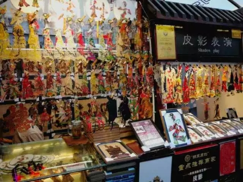
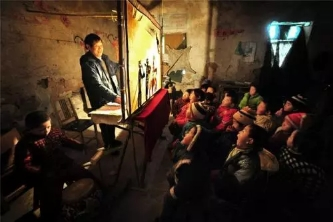
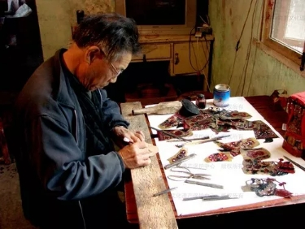
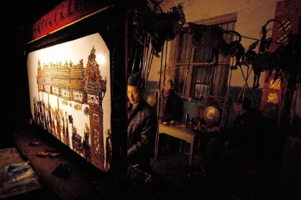
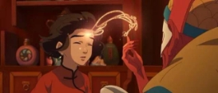
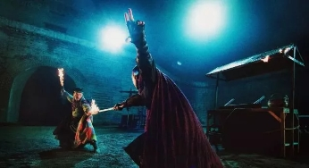
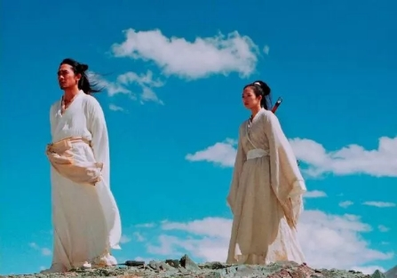
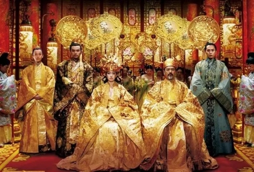

陕西皮影：“一口叙说千古事，双手对舞百万兵”。 皮影发源于陕西，兴盛于河北，曾传到世界各个国家，迷恋了无数外国戏迷，被世界各国的博物馆争相收藏。 皮影历史 皮影戏，又称“影子戏”或“灯影戏”，是一种以兽皮或纸板做成的人物剪影，在蜡烛或燃烧的酒精等光源的照射下用隔亮布进行演戏，是中国汉族民间广为流传的傀儡戏之一。皮影戏是中国民间古老的传统艺术，老北京人都叫它“驴皮影”。据史书记载，皮影戏始于战国，兴于汉朝，盛于宋代，元代时期传至西亚和欧洲，可谓历史悠久，源远流长。  习俗文化 古代人民迷信，所以在旧日广大农村地区，皮影戏非常流行，人们在祈雨、祈晴、谢土神、求子等民间习俗活动后均有酬神还愿的影戏演出，称为“报神”，影戏的唱词则代替人们向神灵祈求吉祥平安。此外，在欢庆丰收、嫁娶生子之类的喜事，及为逝者超度亡灵的丧事时都有皮影戏上演，人们图热闹，寄哀思。  皮影从形式到内容上多褒善贬恶，在皮影造型意识中更是沉淀了中华民族传统文化内涵。 制作工艺 皮影制作工艺复杂精细，一张精美的皮影蕴含了许多老手工艺师傅的心血，所以才会如此活灵活现。皮影的制作流程主要包括八道工序：  1. 选皮：市场上一般选用年轻、毛色黑的公牛皮，这种皮薄厚适中、质坚而柔韧，青中带点透明，制作出来的皮影才是上成的。 2. 制皮：有两种方法，一是“净皮”，二为“灰皮”，净皮是将选好的牛皮浸泡在洁净的水中两三天，取出刮去牛毛，而后刮去肉渣，三则逐渐刮去里皮，老工艺师傅手劲轻而稳，皮子刮得薄厚适中。灰皮则是用各种药剂将牛皮反复浸泡，这种方法刮出的牛皮更易雕刻。 3. 画稿：皮影人物的设计往往脸部体现个性、服饰强调共性，所以一个皮影班的皮影人物，常常皮影头像有一、二千个，而皮影身体只有几百个。制作皮影时有专门的画稿，称为"样谱"，这些设计图稿世代相传。即按人物的不同身份和个性，设计出不同的形象，但这种设计是有一定程式的，如武生饰武生巾，将军为扎巾、元帅戴冲天盔等。 4. 过稿：雕刻艺人将刮好的皮分解成块，用湿布潮软后，再用特制的推板，稍加油汁逐次推摩，使牛皮更加平展光滑，并能解除皮质的收缩性，然后才能描图样。 5. 镂刻：雕刻刀具一般都有十一、二把，甚至三十把以上。艺人雕刻的口诀如下：樱花平刀扎，万字平刀推，袖头袄边凿刀上，花朵尖刀刻。雕刻线有虚实之分，还有暗线、绘线之分。 6. 敷彩：影雕完之后是敷彩。敷彩是皮影制作十分体现功力的一步，根据不同的人物和服装施行不同的色彩，一个人物就是一幅工笔重彩的国画。老艺人用色十分讲究。大都自己用紫铜、银朱、普兰等矿植物炮制出大红、大绿、杏黄等颜色着色。 着色的方法也各有不同。 7. 发汗熨平。 8. 缀结完成。  昏黄的油灯一打，幕布后三五个老艺术家坐在白色幕布之后手里忙碌的操纵着手中的皮影，幕布前是一排排的观众，配合着老师傅的唱曲，缓缓地陈述一个个民俗故事，随着打击乐和弦乐的歌调，一出出大戏上演，喝彩声不断，充斥着浓厚的乡土气息。 如今，世人只知电影却不知皮影，生命在一代代更新，皮影的制作工艺和表演技术却在更新换代中逐渐淡出人们的视野。 陕西华县皮影戏、华阴老腔、乾县阿宫腔、富平县弦板腔均以极高的艺术造诣及原生态文化特征列为国务院公布的《非物质文化遗产国家项目》中，研究保护陕西皮影艺术，对继承发展传统文化具有重要的意义，这么美丽的皮影小人和精彩的皮影戏演出，这么闪耀的一颗明星不能让它就这么陨落在历史的滔滔长河之中。 所以，我们应该行动起来，平日有时间可以约上三五好友，一起去看一场皮影戏，也可向皮影师傅求学，或购买几张皮影小人，送亲戚、好友、外国友人都是不错的选择，也顺势传播了中国的优秀文化，何乐而不为？ 虽然都是一些点点滴滴的小事，却很少人能够做到。其实，每一簇微弱的星光都可以汇聚成灯海，我们每一个人，都可以成为皮影戏的传承者。为了皮影戏能够更好的传承和发扬下去，让我们一起为它添薪加火吧！
如今中国电影在逐渐走向国际化，形式内容的多样让我们已经应接不暇。可当越来越多的外国电影已经开始借鉴中国元素并获得成功时，这不得不让大众再次把目光投向中国自己的文化。 《大鱼海棠》 每条大鱼，都会相遇。 每一个人，都会重聚。 作为历时十二年的一部以中国元素为背景的大作，讲述了一个属于中国人的奇幻故事，影片试图向观众展现那条游弋在每个中国人血液和灵魂中的大鱼--鲲。所以片中多种细节满满的都是“中国味”  就整体而言，片中场景大多以中国红和藏青蓝为整体基调，非常符合传统中国画里朱砂配黛青的感觉。并且难得的满屏都是中国元素却“不俗不土”，色彩在饱和与柔和的调剂上找到了平衡。 整个故事内容也是来源于庄子的《逍遥游》。动画中“鲲”的形象是一条带着翅膀的大鱼，成长过程由从一条小鱼变大，生活容器从一个小杯子到玻璃缸、木桶、小池塘，然后越来越大，大到只有天空能容得下它。这就是所说的“北冥有鱼，其名为鲲。鲲之大，不知其几千里也……” 其中人物的名字也大有来历。“椿”取自《庄子.逍遥游》：“上古有大椿者，以八千岁为春，八千岁为秋”而“湫”名字取自《说文》中的“春秋传曰:晏子之宅湫隘。湫，湫隘下也。从水,秋声”。凤，丿，鼠婆子......都是从我们古代文献启发而授名的，体现了浓浓的古味。 《剑雨》 生未必乐，死未必苦。 剑雨》讲述了头号女剑客“细雨”在寻找八百年前消失的罗摩遗体的途中遇一系列人发生的一系列腥风血雨的事。即一个吊诡而略有邪气的侦探故事，氛围渲染上的刚柔并济以及挥之不去的古朴中国情怀是本片的特色。  作为一部武侠类型片，《剑雨》的故事对江湖，夺宝，争霸，复仇，奇情等所以典型的武侠元素都有涉足。 武侠电影热衷表现的题材背后的忠孝节义，兄弟义气都是地道的中国传统。而这些传统的武侠文化，撑起来这部影片宏大叙述和历史想象。 再者，这部影片的动作设计把中国传统武术的美感很好的表达了出来。细雨的四十二路辟水剑法，彩戏师杂耍般的双刀，雷彬的暗器……既符合人物形象又极难地兼具了东方文化的飘逸，又不失实感。 骨子想表达古典气质，所以影片动作语言充满了想象力，行云流水一般的武打场面有种让人信服的飞腾感，完全符合我们想象中古代侠客该有的样子。中国有着上下五千年的悠久文化，中国文化博大精深，源远流长，因此我们要读懂中国文化。而现当代的我们也完全可以从娱乐的角度出发，从电影等影视作品中窥见我们的传统文化，从而达到了解中国文化圈的目的。 《英雄》 人若无名，便可专心练剑。 武侠动作片可以说是中国最有特色的影片之一。它阐述了浓厚的东方侠义精神，同时将中国功夫通过影片呈现出来。它作为中国人的精神寄托，为我们造就了一个理想的英雄主义世界。而《英雄》这部影片的武打戏就是一部经典。  《英雄》以红、白、蓝三色来区分故事。红色反应无名潜意识里的血气，蓝色是秦王的猜测和想象，是一种悲剧的色彩，无名刺秦是悲剧，飞雪和残剑的爱情也是悲剧。白色是故事的真相，那是一种绝美的杀意。这样体现的是中国古代以字代意的高深笔法。 影片中的打斗精彩，飞天入地，神乎其技，极具美感。把武术的“抗击打”让位于“表演性”追求轻柔飘逸的效果，感受唯美的极致。尤其是无名与长空打斗的那一个场景。老者在傍边抚琴，打斗画面被慢放，可招式看似简单可又极难看清。让人琢磨不透。这是影片追求道家的“无”，儒家的“空”，“大音希声”，“大象无形”的原因。把传统文化融进武打艺术，从而营造纯静，空灵的气氛，完全融入了了中国传统的儒家思想的精髓。 《满城尽带黄金甲》 冲天香阵透长安，满城尽带黄金甲。 满城尽带黄金甲》取材于盛唐灭亡后一段时间，接近于五代十国。这样一部鸿篇巨制的电影在服饰上可谓是下足了功夫。唐代可是说是我们封建社会的鼎盛时期，自唐代起，服饰中也大量花卉图案，构图也活泼自由。  影片里，体现唐代改变以往的天赋神受的创作思想，用真实的花，鸟，虫进行写生，当然，传统的龙，凤也并未受到排斥。华丽又庄重的服装风格在影片中自成一派。这无论是李曼还是巩俐，亦或是宫女的服装上都可以很直接的窥见。 在影片中我们可以看到宫女坦胸露背的形象。在唐朝，露胸有严格的限制和规定。有身份的人才可以穿开胸衫。歌女可以半露胸来取悦统治阶级，而平民女性是不可以的。 所以说，《满城尽带黄金甲》中说封建等级制度影响的坦胸露背的程度十分得当，并没有出现以往影片中的历史错位。 再说以“黄金甲”点睛的亮点。整个内容以菊花隐喻，在服饰上大面积的用金黄色渲染奢侈的贵族气氛。菊花象征劲节只可远观不可亵玩焉。而盔甲的颜色形状一如菊花的花瓣。满城士兵上战场的画面体现了非凡的功力和志在必得的气势。 《卧虎藏龙》 江湖里卧虎藏龙，人心何尝不是？ 刀剑里藏凶，人情又何尝不是？ 《卧虎藏龙》是最为经典的武打加中国风的鼻祖电影。本片除了大量的武打场景深入人心外，音乐的渲染也让人感受到了中国独特的文化底蕴。 影片一开场便是主题音乐《卧虎藏龙》，乐器演奏的忧伤而深沉的旋律自此就贯穿了整部影片，对中国人的感情和人生做了一次诠释。影片中的背景音乐主要是在李慕白和俞秀莲，玉娇龙和罗小虎之间的感情场景。从低沉的二胡声开始，然后弦乐和管弦乐跟进。在背景音乐演奏到一半时，有一个二胡的二度滑音，一下子将柔情凄婉的气氛烘托出来。这段音乐还佐以女生柔声风格的吟唱来强化音乐的画面感，给电影一种从未有过的舒心。 除此之外，配乐《穿越竹林》中箫的运用，那十分独特的悠远、苍凉音色使古代江湖武林的神秘气息扑面而来；《交锋》中琵琶铮铮的音响如金戈撞击之声，让人感受到似古曲《十面埋伏》中的杀气；《思慕青冥剑》中运用二胡那具有纯净、明亮、圆润、甜美、丰满而有穿透力的音色，显现出超脱、空灵之意境。 音乐的搭配使得电影独具特色又能让全世界人理解。 不论是近几年上映的年轻电影还是从前的老电影，从这些影片中我们足以窥见中华文化的博大精深，源远流长。 只有读懂我们自己的文化，我们才可以真正体会到它们的美妙。